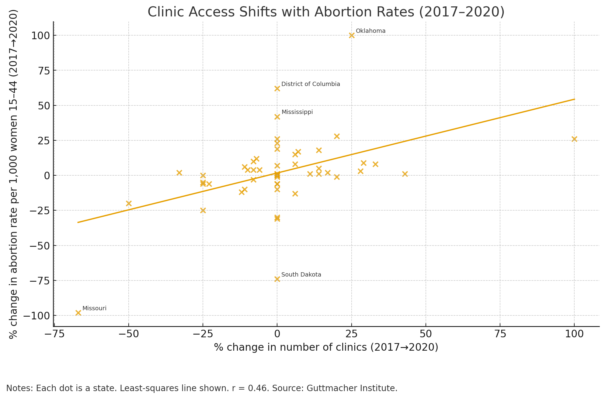
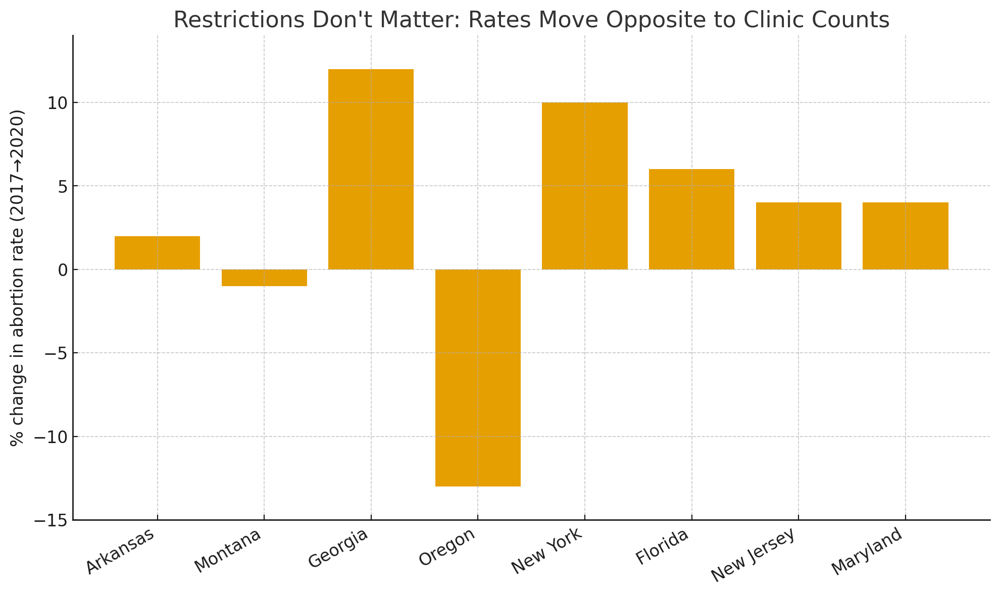

Claim: Between 2017 and 2020, U.S. states where abortion clinics increased saw a larger increase in abortion rates.
Displayed below is one visualization for this claim and one against this claim created using subtle but impactful analysis choices.


Designing both sides clarified how small, defensible choices accumulate into powerful rhetoric. In the earnest view, transparent encodings (all states, clearly labeled measures, a single fitted line) made it straightforward for readers to grasp the central tendency and inspect counterexamples. The correlation r ≈ 0.46 is neither perfect nor trivial, but it supports the proposition that changes in clinical access relate to changes in abortion rates, with visible dispersion that invites further causal inquiry.
To argue the opposite, I discovered how subtle deception can be: cherry-picking legitimate data points that buck the trend and tightening the axis range produced a persuasive “feel” that clinic counts are irrelevant. Nothing in the deceptive chart is an outright falsehood, and its conventional styling signals credibility. Yet the omissions and framing cross the ethical line for communicative analysis: they hide uncertainty, suppress context, and preclude informed judgement. My current definition is that ethical visualization makes relevant variation, uncertainty, and scope conditions available to the reader; persuasive design is acceptable when it does not materially obstruct those elements or misrepresent selection/transformations. When selection is necessary, criteria should be disclosed near the figure.